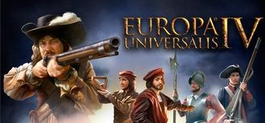
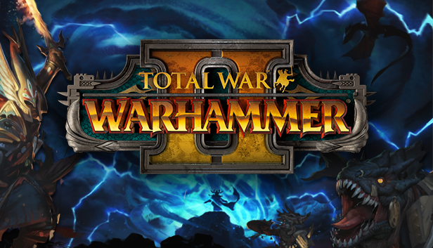

GryPC.PL
GryPC.PL
Strategic
Gra strategiczna to pojęcie odnoszące się do szerokiej grupy gier – przede wszystkim jednak chodzi tu o jedno bądź wieloosobowe gry, w których wygrana zależy nie tylko od losu, ale przede wszystkim od strategii, wiedzy i planowania.
Pare przykładów:

"Europa Universalis IV" to gra komputerowa z gatunku grand strategy wargame osadzona w realiach epoki nowożytnej, wyprodukowana i wydana przez szwedzkie przedsiębiorstwo Paradox Interactive. Premiera gry odbyła się w 2013 roku w wersji na platformy Microsoft Windows, Macintosh oraz Unix. Europa Universalis IV stanowi czwartą numerycznie i piątą chronologicznie (po grze Europa Universalis: Rzym) część serii gier wojennych pod tytułem "Europa Universalis". Gracz w niej przejmuje kontrolę nad dowolnym państwem historycznym z lat 1444–1821, próbując doprowadzić je do miana potęgi poprzez administrację posiadanych terenów, wspieranie rozwoju handlu, prowadzenie dyplomacji oraz działania militarne. Rozgrywka toczy się na planszy podzielonej na prowincje, z których gracz czerpie dochody przeznaczane na bieżące wydatki.
"Europa Universalis IV" stanowi twórcze rozwinięcie mechanizmów znanych z poprzedniej numerycznie części serii, "Europy Universalis III". Oprócz odnowionego silnika graficznego wprowadza nowe rozwiązania w rozgrywce, częściowo zapożyczone z dodatków do "Europy Universalis III" (podejmowanie decyzji narodowych, zróżnicowanie buntowników i tym podobne elementy mechaniki gry), a po części nowatorskie w ramach serii. Między innymi finansowanie rozwoju technologicznego oraz stabilizacji państwa zostało uproszczone za sprawą systemu punktów monarchy; zmianie uległ również sposób prowadzenia handlu międzypaństwowego.
Europa Universalis IV została wyprodukowana w Paradox Development Studio, którego głównymi pracownikami byli projektanci Johan Andersson oraz Thomas Johansson. Głównym celem twórców było uproszczenie interfejsu gry oraz uczynienie jej bardziej przystępną dla nowicjuszy. Efektem zmian był pozytywny odbiór gry przez krytyków, którzy chwalili rozgrywkę, zmiany w serii oraz oprawę audiowizualną. Europa Universalis IV zyskała także popularność wśród graczy korzystających z systemu dystrybucji cyfrowej Steam.
"Europa Universalis IV" stanowi twórcze rozwinięcie mechanizmów znanych z poprzedniej numerycznie części serii, "Europy Universalis III". Oprócz odnowionego silnika graficznego wprowadza nowe rozwiązania w rozgrywce, częściowo zapożyczone z dodatków do "Europy Universalis III" (podejmowanie decyzji narodowych, zróżnicowanie buntowników i tym podobne elementy mechaniki gry), a po części nowatorskie w ramach serii. Między innymi finansowanie rozwoju technologicznego oraz stabilizacji państwa zostało uproszczone za sprawą systemu punktów monarchy; zmianie uległ również sposób prowadzenia handlu międzypaństwowego.
Europa Universalis IV została wyprodukowana w Paradox Development Studio, którego głównymi pracownikami byli projektanci Johan Andersson oraz Thomas Johansson. Głównym celem twórców było uproszczenie interfejsu gry oraz uczynienie jej bardziej przystępną dla nowicjuszy. Efektem zmian był pozytywny odbiór gry przez krytyków, którzy chwalili rozgrywkę, zmiany w serii oraz oprawę audiowizualną. Europa Universalis IV zyskała także popularność wśród graczy korzystających z systemu dystrybucji cyfrowej Steam.

"Hearts of Iron IV" to komputerowa gra wojenna o wielkiej strategii opracowana przez Paradox Development Studio i wydana przez Paradox Interactive. Został wydany na całym świecie 6 czerwca 2016 r. Jest to kontynuacja "Hearts of Iron III" z 2009 roku i czwarta główna część serii Hearts of Iron. Podobnie jak poprzednie gry z serii, "Hearts of Iron IV" to wielka strategiczna gra wojenna, która koncentruje się na II wojnie światowej. Gracz może przejąć kontrolę nad dowolnym narodem na świecie w 1936 lub 1939 roku i poprowadzić go do zwycięstwa lub porażki z innymi krajami.
"Hearts of Iron IV" odniosło komercyjny sukces, ze sprzedażą powyżej 1 miliona sztuk do 2018 roku.
"Hearts of Iron IV" odniosło komercyjny sukces, ze sprzedażą powyżej 1 miliona sztuk do 2018 roku.

"Total War: Warhammer II" to strategia turowa i taktyczna gra wideo czasu rzeczywistego opracowana przez Creative Assembly i opublikowana przez firmę Sega. Jest częścią serii Total War i kontynuacją "Total War: Warhammer" z 2016 roku. Akcja gry osadzona jest w fikcyjnym uniwersum Warhammer Fantasy należącym do Games Workshop. Gra została wydana na komputery PC z systemem Microsoft Windows w dniu 28 września 2017 r. Feral Interactive wydała grę na macOS i Linux w dniu 20 listopada 2018 r. Gra wymaga konta Steam do grania.
Total War: Warhammer II oferuje strategię turową i rozgrywkę taktyczną w czasie rzeczywistym podobną do innych gier z serii Total War.
W kampanii gracze przemieszczają armie po mapie i zarządzają osadami w trybie turowym. Gracze angażują się w dyplomację i walczą z frakcjami kontrolowanymi przez AI. Kiedy armie się spotykają, walczą w czasie rzeczywistym. Gra ma również niestandardowy tryb bitew, w którym gracze mogą tworzyć dostosowane bitwy w czasie rzeczywistym, a także bitwy online dla wielu graczy. Ci, którzy posiadają wyścigi z pierwszej gry, będą mieli te same wyścigi odblokowane dla trybu wieloosobowego w drugiej grze.
Zapowiedziane rasy w kampanii obejmują jaszczuroludzie, wysokie elfy, mroczne elfy i skaveny. Królowie Grobowców i Wybrzeże Wampirów (frakcja nieumarłych piratów) zadebiutowały później jako frakcje płatnej zawartości do pobrania, wraz z "Ekspedycją Huntsmarshal", Chevaliers de Lyonesse (zakon rycerski) i "Sisters of Twilight" (frakcja leśnych elfów).
Główna kampania gry nosi nazwę Eye of the Vortex. Jest to kampania narracyjna, w której każda z grywalnych ras ma własną historię i przerywniki. Ponadto gracze, którzy posiadają zarówno "Total War: Warhammer", jak i "Total War: Warhammer II", mają dostęp do ogromnej połączonej kampanii zwanej Mortal Empires, która jest bardziej doświadczeniem piaskownicy. Mortal Empires należy pobrać ręcznie ze Steam, ale jest bezpłatne dla graczy, którzy posiadają obie gry. Kampanię można również rozegrać online z innym graczem w trybie kooperacji lub pojedynku.
Total War: Warhammer II oferuje strategię turową i rozgrywkę taktyczną w czasie rzeczywistym podobną do innych gier z serii Total War.
W kampanii gracze przemieszczają armie po mapie i zarządzają osadami w trybie turowym. Gracze angażują się w dyplomację i walczą z frakcjami kontrolowanymi przez AI. Kiedy armie się spotykają, walczą w czasie rzeczywistym. Gra ma również niestandardowy tryb bitew, w którym gracze mogą tworzyć dostosowane bitwy w czasie rzeczywistym, a także bitwy online dla wielu graczy. Ci, którzy posiadają wyścigi z pierwszej gry, będą mieli te same wyścigi odblokowane dla trybu wieloosobowego w drugiej grze.
Zapowiedziane rasy w kampanii obejmują jaszczuroludzie, wysokie elfy, mroczne elfy i skaveny. Królowie Grobowców i Wybrzeże Wampirów (frakcja nieumarłych piratów) zadebiutowały później jako frakcje płatnej zawartości do pobrania, wraz z "Ekspedycją Huntsmarshal", Chevaliers de Lyonesse (zakon rycerski) i "Sisters of Twilight" (frakcja leśnych elfów).
Główna kampania gry nosi nazwę Eye of the Vortex. Jest to kampania narracyjna, w której każda z grywalnych ras ma własną historię i przerywniki. Ponadto gracze, którzy posiadają zarówno "Total War: Warhammer", jak i "Total War: Warhammer II", mają dostęp do ogromnej połączonej kampanii zwanej Mortal Empires, która jest bardziej doświadczeniem piaskownicy. Mortal Empires należy pobrać ręcznie ze Steam, ale jest bezpłatne dla graczy, którzy posiadają obie gry. Kampanię można również rozegrać online z innym graczem w trybie kooperacji lub pojedynku.